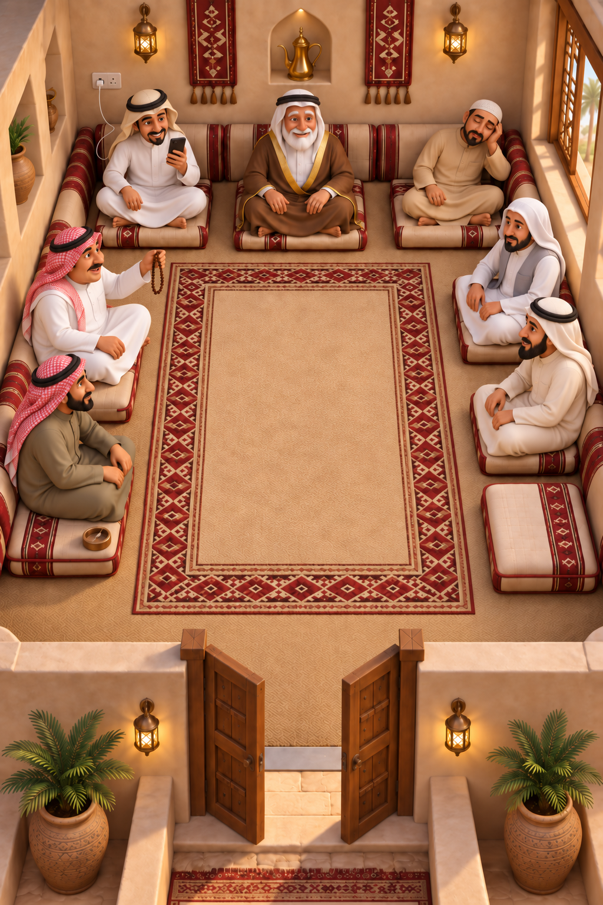

حيّاك في علوم المجلس
لكل ضيف طبعه، ولكل ليلة سالفة. رتّب الضيوف في مقاعدهم، انتبه لشروطهم، ثم صبّ القهوة حتى يكتمل المجلس.

المساعدة والأسئلة الشائعة
كيف ألعب؟
ابدأ بالليالي التعليمية الثلاث. اقرأ طلب الليلة وشروط الضيوف، ثم اسحب كل ضيف إلى المقعد المناسب. بعد إكمال الترتيب اختر صبّ القهوة. إذا ظهر تنبيه، راجع موضع الضيف أو الشرط المذكور وحاول مرة أخرى.
كيف أفتح الفصل التالي؟
أكمل الليالي العشر في الفصل السابق واجمع فيه ٢٥ فنجالًا على الأقل من أصل ٣٠. يمكنك إعادة ليلة لتحسين تقييمها. الليالي التعليمية الثلاث لا تدخل في مجموع فناجيل الفصل.
هل أحتاج اتصالًا بالإنترنت؟
يمكن حل ألغاز اللعبة الأساسية دون اتصال. تحتاج إعلانات المكافأة الاختيارية وعمليات الشراء واسترجاعها وخدمات Game Center إلى اتصال بالإنترنت. تحفظ اللعبة التقدّم والإعدادات على جهازك.
ما اللغز اليومي؟
توجد مجموعة من ٦٠ لغزًا تتناوب بحسب اليوم. تحدٍّ إضافي مستقل عن ليالي القصة، ويمكنك متابعة أيام مشاركتك من داخل اللعبة.
كيف أستخدم التلميح والتراجع؟
التلميح الأول لكل ليلة مجاني، ولديك تراجعان مجانيان في المحاولة. يمكن طلب مساعدة إضافية بمشاهدة إعلان مكافأة اختياري عند توفره. إعادة المحاولة متاحة دون إعلان.
ماذا يقدّم شراء «بدون إعلانات»؟
هو شراء اختياري لمرة واحدة، يتيح المساعدة التي كانت مرتبطة بإعلانات المكافأة دون مشاهدتها. يعرض متجر Apple السعر قبل تأكيد الشراء. لاسترجاعه افتح الإعدادات واختر «استرجع مشترياتي» باستخدام حساب Apple الذي اشترى المنتج نفسه. لا تتطلب استعادة الشراء اشتراكًا جديدًا.
لم يظهر الإعلان أو لم تصل المكافأة
قد لا يتوفر إعلان في منطقتك أو وقت الطلب. تأكد من الاتصال، ثم حاول لاحقًا. لا تُمنح المكافأة إلا بعد أن تؤكد خدمة الإعلان اكتمال المشاهدة. إذا استمرت المشكلة، أرسل لنا رقم إصدار اللعبة ونوع الجهاز ووصف ما حدث.
كيف تعمل لوحة المتصدرين والإنجازات؟
تستخدم اللعبة Apple Game Center لإرسال نقاط السمعة والإنجازات عند تسجيل الدخول. يمكنك إدارة تسجيل الدخول ومشاركة نشاطك من إعدادات Game Center في الجهاز. لا تحتاج حسابًا لدى أبو سلامة للألعاب للعب القصة.
هل ينتقل تقدّمي عند تغيير الجهاز؟
التقدّم والإعدادات محفوظان محليًا، ولا توجد مزامنة تقدّم خاصة باللعبة بين الأجهزة. استرجاع شراء «بدون إعلانات» منفصل عن استرجاع التقدّم. قد تدخل البيانات المحلية ضمن النسخ الاحتياطية التي يديرها نظام Apple بحسب إعداداتك.
أين أغيّر خيارات الخصوصية؟
يمكنك تغيير إذن التتبع من إعدادات الجهاز، ضمن الخصوصية والأمن ثم التتبع. يظهر خيار خصوصية الإعلانات داخل إعدادات اللعبة عندما تتطلبه منصة موافقة Google UMP في منطقتك. اقرأ سياسة الخصوصية لتفاصيل الخدمات والبيانات.
Welcome to the majlis
Seat each guest according to their preferences, then serve the coffee. The game includes 63 nights: three tutorial nights followed by six story chapters of ten nights each, plus a rotating set of 60 daily puzzles.
How do I play and unlock chapters?
Read the night’s clues, drag guests to suitable seats and choose to serve coffee. Complete all ten nights in a chapter and earn at least 25 of its 30 finjals to unlock the next chapter. Tutorial nights do not count toward that total. Replay a night to improve its rating.
Can I play offline, and where is progress saved?
Core puzzles work offline. Optional rewarded ads, purchases, purchase restoration and Game Center need internet access. Progress and settings are stored on your device. The game does not provide its own cross-device progress sync; Apple-managed device backups may include local data, depending on your settings.
Hints, undo and the No Ads purchase
The first hint for each night and two undos per attempt are free. Further help can use an optional rewarded ad when available. Resetting an attempt is free. The optional, one-time No Ads purchase provides the help associated with rewarded ads without watching them. Apple displays the price before purchase. Use Restore purchases in the game’s settings with the same Apple Account to restore an existing purchase.
Ads, Game Center and privacy choices
Rewarded ads are optional and availability varies. Game Center shares reputation scores and achievements with Apple while signed in; manage your profile and activity sharing in the device’s Game Center settings. Manage tracking permission in the device’s Privacy & Security settings. The game offers Google UMP ad privacy options when required. See the English privacy policy for details.
Contact support
Email aboslamah88@icloud.com with the game version, device model, night number and a description of the issue. Please do not send passwords or payment details.